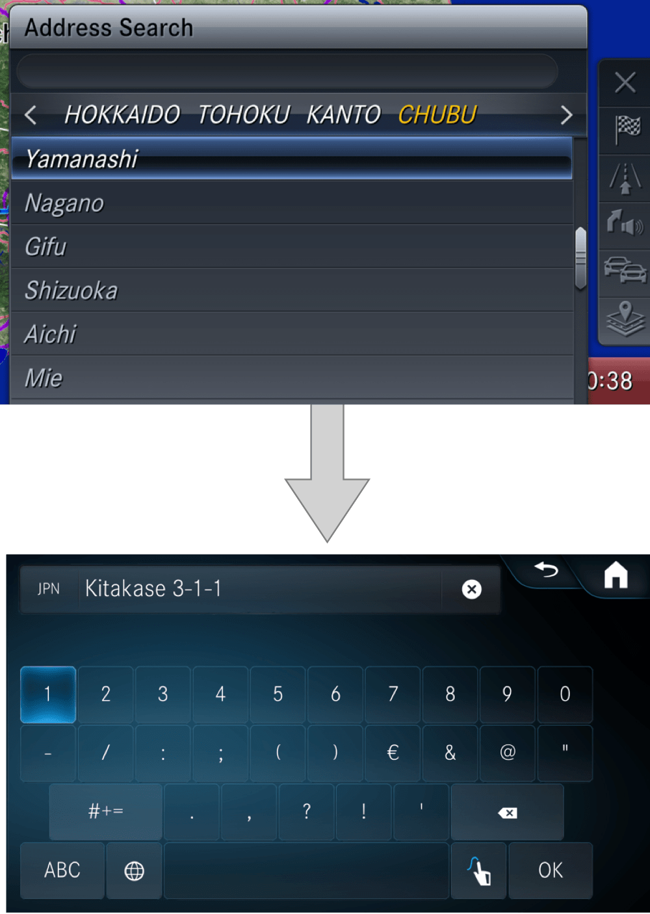
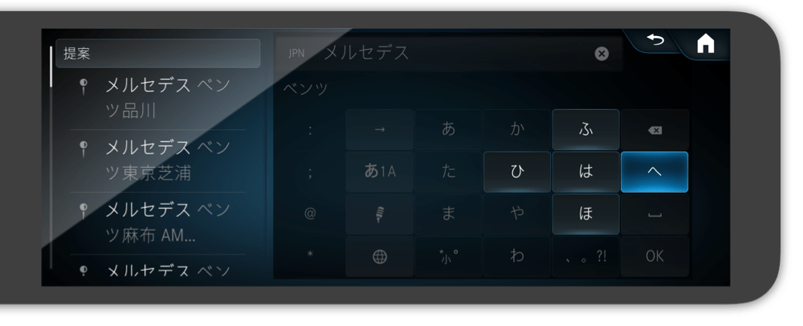
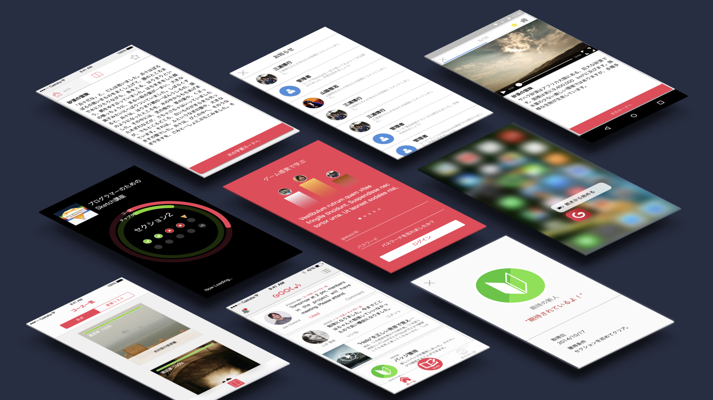

UI/UX Designer
Hiroyuki Miura (a.k.a うっくん) is a UI/UX designer based in Japan. Born in April 14th, 1990.
Works
Until end of 2019



2016

2015

Skills
UI Design (App, Web, embeded)UX DesignUsability Research
Languages
EnglishJapanese
Programming Languages
HTMLCSSJavaScript (jQuery)Swift (SwiftUI)
Tools
SketchFigmaAdobe XD
PhotoshopIllustratorMotion5Final Cut Pro XProtoPie
JiraConfluence
Gaming
Smash Bros Ultimate (Samus)Street Fighter 4 (Ken)Street Fighter V (Ken)Splatoon 2